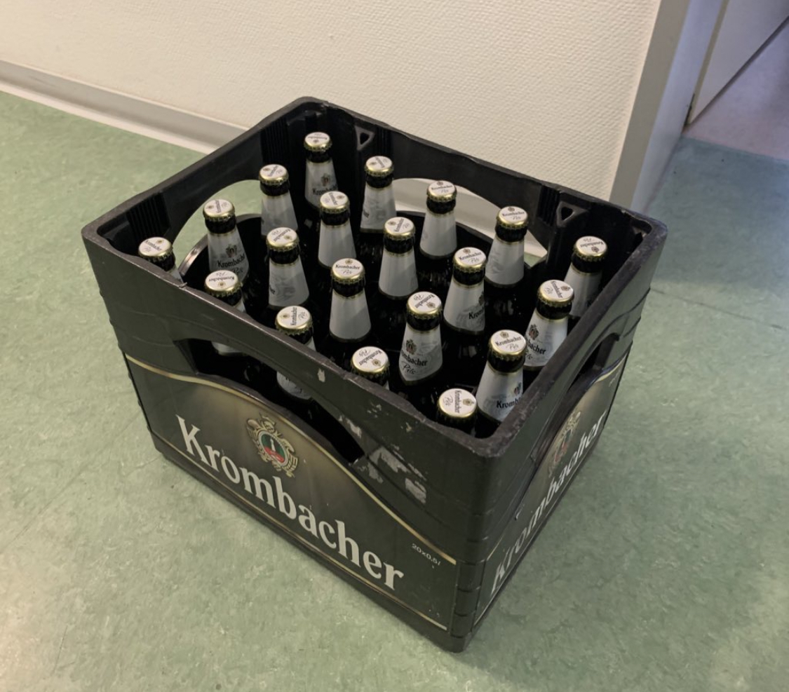
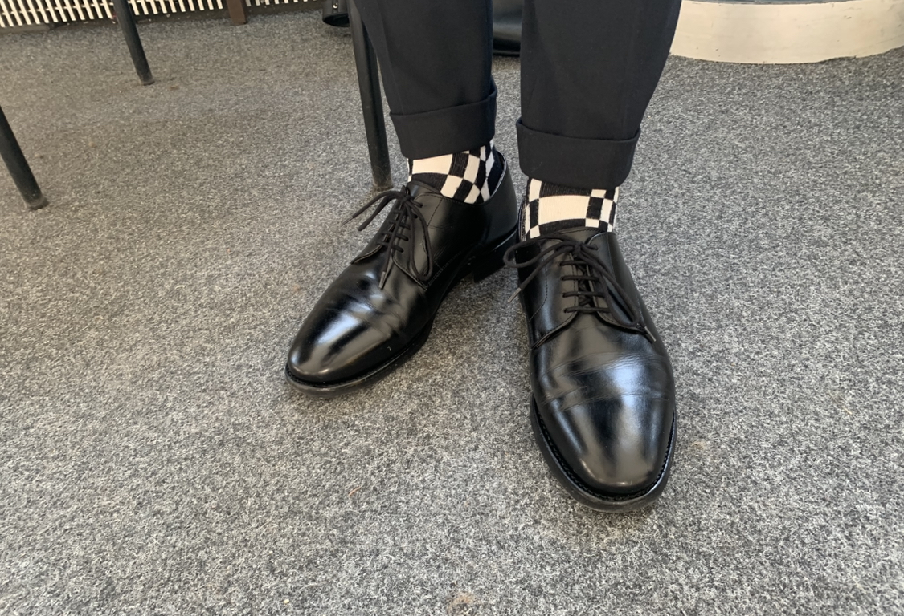
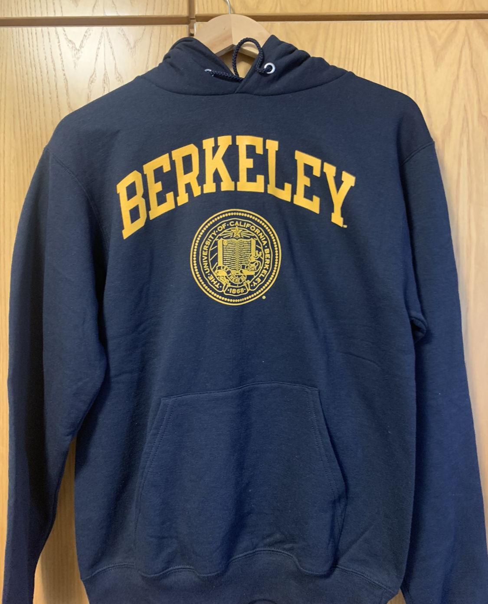
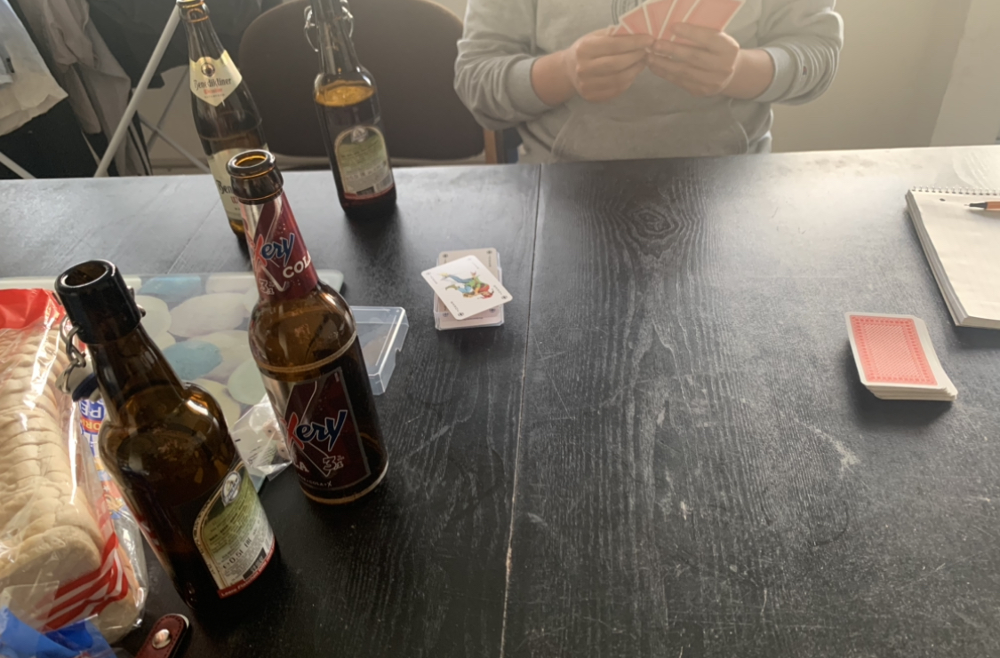
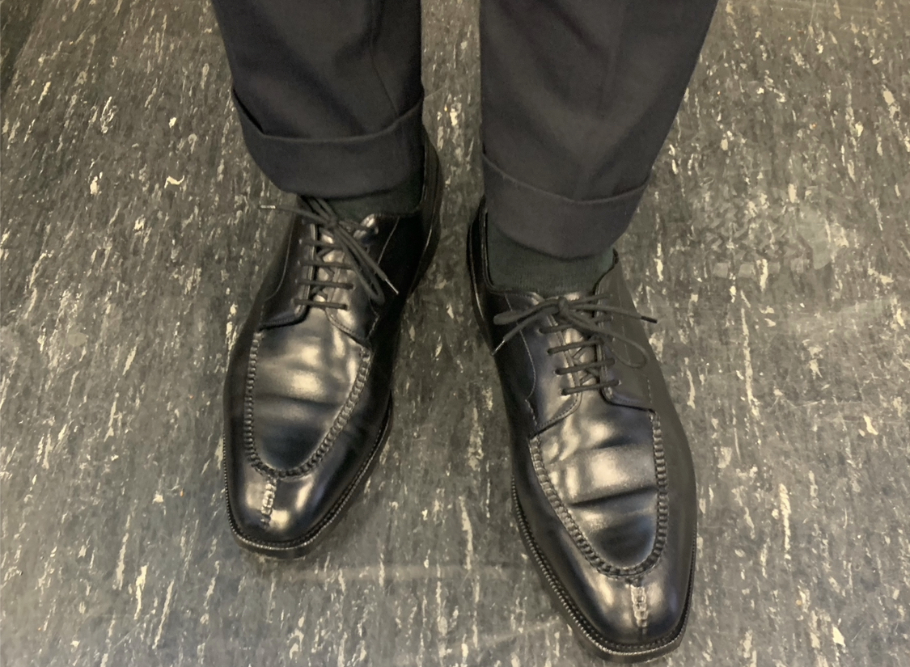

現在ドイツの大学院にいます. 内部モデル理論を研究しています.
01.04.2023
4月になった. 夏学期の始まりである. 日本と大学のシステムも違うしまだ春が来ていないので, 4月のあの不思議な感じは全くない.
今セメスターもそこそこ講義を取るのでその予定を考えていた. (M2の一年間で取る授業を0にしようとしている. )
とりあえず付値体のモデル理論は確定で取ることにした.
集合論の講義は単位数稼ぎになるので即決である. 群論及び表現論に関連する講義を自分は取る必要があるのだが, 今期の講義が線形代数群であまりにも困っている.
講義内容見る限りだと付いていけなさそう. 代数幾何とか全然知らん. (ちなみに前の学期だとエタールコホモロジーの講義だったので取らなかった. )
トポロジーに関連する講義は代数トポロジーの講義と「Operads, Configurations and Trees」というタイトルの講義を取る予定である.
内容1ミリも知らないので一回行ってみてダメそうだったらどうにか考えることにする.
今期もかなり講義を取らないといけないのしんどい. (普通なら1年半かけて取るのを1年で全部取ろうとしてるからキツいのは当たり前である. )
論文を読み進めたりしていた. ビールがうまい. ドイツのビール美味しいし, 種類がとにかく多いので飽きない.
今週はずっと雨だったので雨用の革靴に頼りっきりだった. ミュンスターは基本的に天気悪いので雨用革靴の出番が多い.
イギリスで革靴を買ったばかりなのにもう既に日本に帰国した時に観に行きたい革靴ショップを調べている. 誰か今度帰国した時に革靴巡りしましょう. 夜は美味しい日本酒が飲みたいです.
某氏が一人暮らしを始めた途端にハイクオリティな料理ばかり作っていて驚いている. 自分は親元を離れて9年目なのにいつまで経っても料理は上手くならない.
02.04.2023
少し数学をしたあとはチェスをしていた. 今はレート1200を超えることを目標としている. 定跡をもっと勉強する必要がありそう.
めっちゃ綺麗にチェックメイトできたと思ったら, 次のゲームで大ポカをしてボコボコにされた. 悔しいぜ. タクティクスの練習をもっと積む必要がありそう. （詰碁をいっぱいやるのに近いイメージ.)
04.04.2023
朝はモデル理論の講義に出た. モデル理論の予備知識パートは既知だった. 付値体に関しては未知だった.
Divisible ordered abelian groupの理論がQEを持つことを示した.
あとは家で数学していた。夜はチェスをしていた. レート1000台の相手に勝てるようになってきた. タクティクスの練習も積んでいる.
ただ絶対勝てる試合でチェックをかけずに積ませようとしてステイルメイトにしてしまうこともあった.
まだ細かい部分読みきれてなかったり, オープニングで悪い形を作ってしまったりしてしまう. 最近数学かチェスしかしていない気がする.
東大数理の同じ研究室の人がオランダに来るらしいのでそのうちアムステルダム行きたい. あとはU先輩がボンに来るらしいのでそのうちボンにも行く予定である.
学期が始まった途端に快晴続きである. 日差しが暑い... 日陰に来ると寒いのでしんどい.
トレーディングポストでクロケット＆ジョーンズのアーカイブコレクションなるものが出ており, 非常に気になっています. 年末帰国した時に見に行きたい. 年末までに進捗が生えていたら買おうかな(馬人参).
05.04.2023
モデル理論の講義があった. 先生がとてもパワフルである. 学生にガンガン質問に答えさせるスタイルで周りの人があまり答えないので自分が答えるハメになっている.
今日は快晴だったのでDOVERを履いた. 圧倒的な足なじみの良さである. 普通に歩くたびに感動するレベルである. これほど素晴らしい靴に出会えて嬉しい.
シボ皮のDOVERがあるらしい. めっちゃかっこいい.
それ以外の時間は数学していた. 夜はワインの飲みながらチェスをしていた.
06.04.2023
4月9日がイースターのため明日から4連休である. スーパーは当然閉まるので(ここはドイツなので), 買い出しに行った. ビールがケースで買うとめっちゃ安かったのでついつい買ってしまった.
500ml, 1本あたり70円ほどである. 運ぶのが大変だった.

今日は久しぶりにBerwickのプレーントゥを履いた. 履くたびにブラッシングをして, 数回履いたら手入れを欠かさずにしているので特に何もせずともちゃんと光沢が出るように育った. 嬉しい.
足にも良く馴染んでいるのでこの靴だったら20km以上は平気で歩ける. (というか歩いた.) かなりお気に入りの靴の1つである.
細かい皺が入ってしまっていが少し残念な点である. この点に関しては3万円台の靴であるならこれぐらいの革質なのかなとは思っている.
持っている靴だとDOVERやAUDLEYに使われている革と比較するときめ細やかさが全然違う. またライニング(靴の内側のこと)の革の良さも全く違う.
そういうところが3万円台, 4万円台の靴と10万円, 20万円を超える靴の違いだろうか. もちろん私はBerwickの靴は非常に好きである.
(帰国した際は新しくできたBerwick 赤坂店に絶対行くと決めている. )
イギリス, イタリア, フランスの革靴のデザインに影響を受けていることは間違い無くあるだろう.
それはそうとしてDOVERの革質が素晴らしすぎて毎日愛でている. (いつもこれ言ってる気がする. ) これを読んでいる人もお気に入りの革靴があったら教えて欲しいぜ.

08.04.2023
家で数学をしていた. 幾何の講義で特異コホモロジーを勉強している. 結構しんどい. 幾何難しい. ホモロジーに関しても復習して思い出さないといけないなぁと思いつつ, 集合論をしていた.
あと付値体とかについてもちょっと勉強しておきたい. (ヘンゼルの補題とか証明したことないので)
09.04.2023
昨日の夜に東大数理の先輩とzoomで話して思ったことを書く. (私はその先輩と非常に尊敬している. 私が最も尊敬している人の一人である. )
これは自分に対する戒めでもあるし, 普段心がけているものもある.
まずもっと能動的に, アクティブにならないといけないと思った. 参加できるセミナー, 研究集会には全て参加する勢いを常に持ちたい. よく言われることだが時間は作るべきものである.
忙しいということを言い訳にしないようにしたい. 今期は講義に関しては取れるだけ取っているので最後までちゃんと完走したい. （コホモロジーの勉強頑張ります...)
人との交流に関してもまだ英語で喋ることに関して苦手意識があるので, それに臆さずたくさんの人ともっと交流していきたい. 参加できるイベントには全部参加しような. ドイツ留学ができたのも元を辿ると学部一年の頃から臆さず研究集会やセミナーに参加し続けて人と交流した結果なのでそれを心に留めておきたい. あとはちゃんと人に感謝をして謙虚に生きていきたい. ありきたりのことしか言ってないかもしれないが私自身がこれを100パーセント実行できていないので改めて書いただけである. (恥ずかしい限りである. )
私は怠惰だし, 抜群の能力を持っているわけでもない. しかし自分の理想的なものに少しでも近づける努力は欠かさないようにしたいと改めて思った.
数学に関してはホモロジー代数の復讐をしている(現在進行形). 射影空間のホモロジー群の計算とか完全に忘れたのでちゃんとやり直したい... あとは幾何学IIでカバーしてない題材を勉強する必要がありそう.
12.04.2023
バークレーに出張していた先輩からバークレーのパーカーをもらった. 嬉しい.

13.04.2023
木曜は3つ講義があり忙しい. 合間合間で自分の勉強を進める. メインで進めている論文の周辺の論文を読み進めた. コホモロジーの講義もちゃんと出た.
講義の時間でちゃんと理解を進めたいのでちゃんとノートを取ってその場で計算を追いながら聞いている. 幾何に慣れているとみてるだけでわかるものなのか?
コホモロジーの普遍係数定理をやった. Extの基本的性質を見て終わった. Extは幾何学IIで軽く触れたからなんと無く覚えていた.
Free resolutionの取り方に依存しないのってなんでだっけと考えていたら講義が終わった. まだよくわかっていないので後で調べてみる. 集合論の講義はボーナスタイムである.
そのあとはOperadの講義に出た. Operad上の代数を考えることで可換環, 可換モノイド, モノイドの構造が出てくることを見た. いい話だと思った.
色々なsymmetric monoidal categoryでoperad上の代数を計算するの楽しそう. そのあとはoperad上の加群を定義して終わった.
夜は研究室の人と酒を飲んだ. アメリカの話を聞いたり, 数学の話をした. そのあとはセブンブリッジをやった.

14.04.2023
指導教官とミーティングがあった. いくつか質問をして, そのあとは数学の話をしていた. 来週までに今読んでいる論文をだいたい読み終えておきたい.
特にワックスで磨いているわけでもないが輝きを放つDover.

シャワーを浴びている時に自我について考えていた. 恥ずかしながら私は自分自身をよく理解し始めたのが高校2年生になってからである.
それまでは自分の気質や衝動的な部分をどう制御すればいいか, 付き合っていけばいいかよくわかっていなかった.
とは言いつつも今私が私自身を完全に理解してコントロールできているかというともちろんそうではないと思っている. 他の人はもっと良く, 上手く生きているのだろうか?
他の人はどのように考えて普段生活しているのか知りたい.